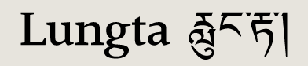

Work from the 2004 class
Download PDF specimens of the typefaces, Reflection on Practice essays on the development of the typefaces, and contact the designers. Read more about the course at the Department of Typography and Graphic Communication website.
Jo De Baerdemaeker (Belgium/UK) email
web
Lungta specimen

David Cabianca (Canada) email
Cardea specimen